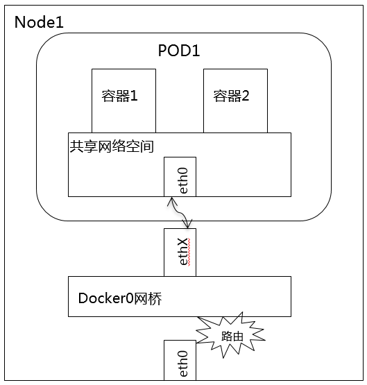
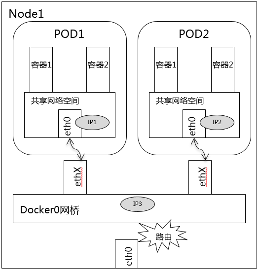
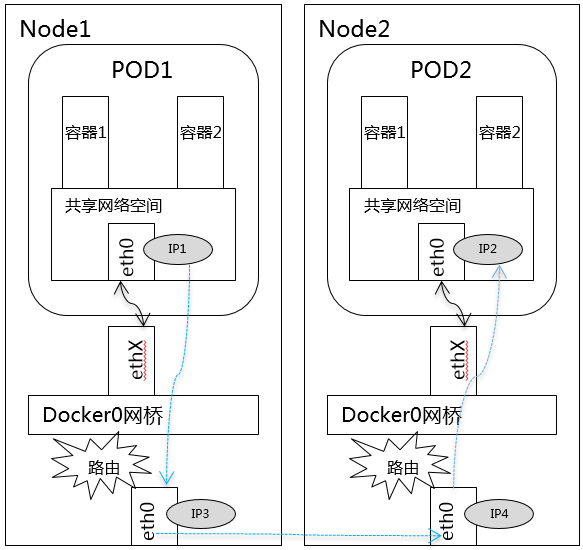
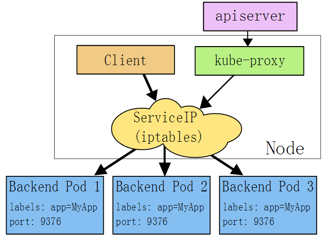
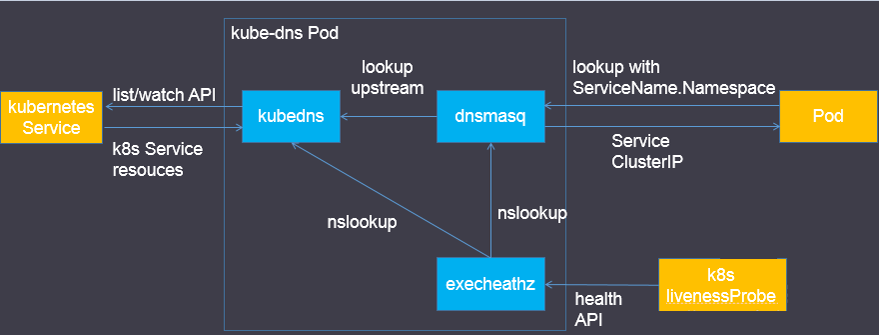
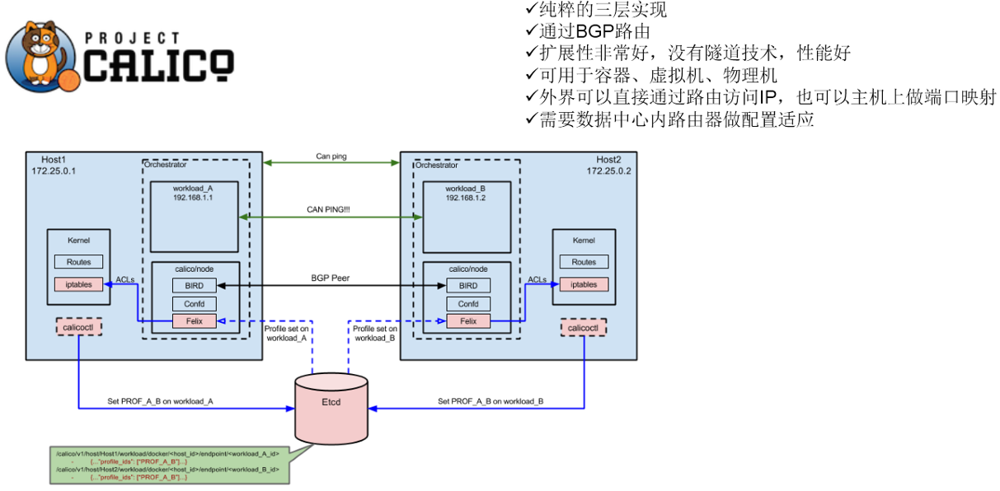
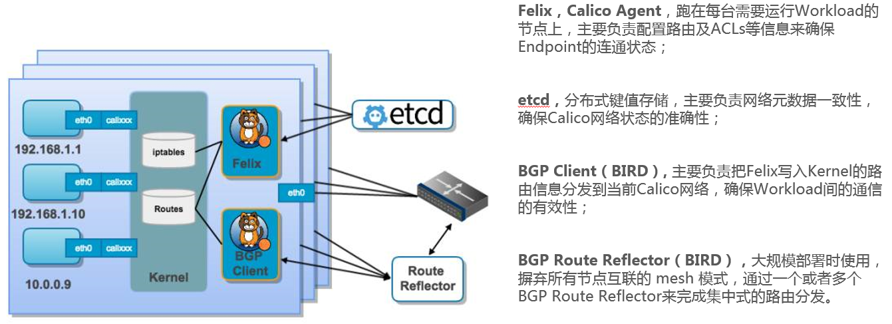

Kubernates网络方案
Table of Contents
Kubernetes网络模型
在Kubernetes网络中存在两种IP：
- Pod IP：地址是实际存在于某个网卡(可以是虚拟设备)上的
- Service Cluster IP：它是一个虚拟IP，是由kube-proxy使用Iptables规则重新定向到其本地端口，再均衡到后端Pod的
Pod网络设计模型
- 基本原则：每个Pod都拥有一个独立的IP地址，而且假定所有的pod都在一个可以直接连通的、扁平的网络空间中
- 设计原因：用户不需要额外考虑如何建立Pod之间的连接，也不需要考虑将容器端口映射到主机端口等问题
- 网络要求：
- 所有的容器都可以在不用NAT的方式下同别的容器通讯
- 所有节点都可在不用NAT的方式下同所有容器通讯
- 容器的地址和别人看到的地址是同一个地址
Docker网络基础
Linux网络名词解释
- 网络的命名空间：Linux在网络栈中引入网络命名空间，将独立的网络协议栈隔离到不同的命令空间中，彼此间无法通信；docker利用这一特性，实现不容器间的网络隔离
- Veth设备对：Veth设备对的引入是为了实现在不同网络命名空间的通信
- Iptables/Netfilter：
- Netfilter：负责在内核中执行各种挂接的规则(过滤、修改、丢弃等)，运行在内核模式中
- Iptables：在用户模式下运行的进程，负责协助维护内核中Netfilter的各种规则表
- 通过二者的配合来实现整个Linux网络协议栈中灵活的数据包处理机制
- 网桥：网桥是一个二层网络设备，通过网桥可以将linux支持的不同的端口连接起来，并实现类似交换机那样的多对多的通信
- 路由：Linux系统包含一个完整的路由功能，当IP层在处理数据发送或转发的时候，会使用路由表来决定发往哪里
Docker网络实现
下图展示了Docker网络在整个Docker生态技术栈中的位置：

Docker网络实现：
- 单机网络模式：
- Bridge
- Host
- Container
- None
- 多机网络模式：
- Docker 在 1.9 版本中引入Libnetwork项目，对跨节点网络的原生支持
- 通过插件方式引入的第三方实现方案:
- Flannel
- Calico
- ……
Kubernetes网络基础
同一Pod中容器间通信
同一个Pod的容器共享同一个网络命名空间，它们之间的访问可以用localhost地址 + 容器端口就可以访问：

同一Node中Pod间通信
同一Node中Pod的默认路由都是docker0的地址，由于它们关联在同一个docker0网桥上，地址网段相同，所有它们之间应当是能直接通信的：

不同Node中Pod间通信
不同Node中Pod间通信要满足2个条件：
- Pod的IP不能冲突
将Pod的IP和所在的Node的IP关联起来，通过这个关联让Pod可以互相访问

Service
Service是一组Pod的服务抽象，相当于一组Pod的LB，负责将请求分发给对应的Pod
Cluster IP
Service会为这个LB提供一个IP，这个IP被称为Cluster IP：
- Cluster IP是Kubernates系统中虚拟的IP地址，由系统动态分配
- Kubernates集群中的每个节点都运行kube-proxy：负责为ExternalName以外的服务实现一种虚拟IP形式，默认实现是iptables
- Kubernates1.1以前，Service是一个第三层(TCP/UDP over IP)构造，而现在已经添加Ingress API 表示第七层(http)服务
NodePort
- 在集群的每个节点（每个节点的相同端口）上公开服务，可以通过任何<NodeIP>:<NodePort>访问该服务
- 将类型字段设置为"nodePort"，Kubernates主机会从30000～32767分配一个端口，每个节点将代理该端口到您的服务
LoadBalancer IP
- 云服务商提供负载均衡器转发请求到<NodeIP>:<NodePort>上
- 一些云服务商允许提供LoadBalancer IP，将使用用户指定的LoadBalancer IP来创建负载均衡器，如果未指定，则会将一个临时IP分配给负载均衡器
External IP
- 如果有外部IP路由到集群的一个或多个节点，服务可以暴露在外部IP上，外部IP端口上的流量将进入到路由到其中一个服务端点
- 外部IP不由Kubernates管理，由集群管理员管理
Kube-Proxy
一个简单的网络代理和负载均衡器，它的作用主要是负责Service的实现。具体来说，就是实现了内部从Pod到Service和外部的从NodePort向Service的访问
实现方式
- userspace：在用户空间，通过kuber-proxy实现LB的代理服务。kube-proxy的最初的版本，较为稳定，但是效率也自然不太高。
- iptables：纯采用iptables来实现LB，是目前kube-proxy默认的方式
下面是iptables模式下的实现方式：

在这种模式下，kube-proxy监视Kubernetes主服务器添加和删除服务和端点对象。对于每个服务，它安装iptables规则，捕获到服务的clusterIP（虚拟）和端口的流量，并将流量重定向到服务的后端集合之一。对于每个Endpoints对象，它安装选择后端Pod的iptables规则
默认情况下，后端的选择是随机的。可以通过将service.spec.sessionAffinity设置为“ClientIP”（默认为“无”）来选择基于客户端IP的会话关联
与用户空间代理一样，最终结果是绑定到服务的<IP>:<端口>的任何流量被代理到适当的后端，而客户端不知道关于Kubernetes或服务或Pod的任何信息。这应该比用户空间代理更快，更可靠。然而，与用户空间代理不同，如果最初选择的Pod不响应，则iptables代理不能自动重试另一个Pod，因此它取决于具有工作准备就绪探测
kube-dns
Kube-dns用来为kubernetes service分配子域名，在集群中可以通过名称访问service。通常kube-dns会为service赋予一个名为“service名称.namespace.svc.cluster.local”的A记录，用来解析service的cluster ip
kube-dns组件

Kubedns
- 接入SkyDNS，为dnsmasq提供查询服务
- 替换etcd容器，使用树形结构在内存中保存DNS记录
- 通过K8S API监视Service资源变化并更新DNS记录
- 服务：10053端口
Dnsmasq
Dnsmasq是一款小巧的DNS配置工具：
- 通过kubedns容器获取DNS规则，在集群中提供DNS查询服务
- 提供DNS缓存，提高查询性能
- 降低kubedns容器的压力、提高稳定性
Dockerfile在GitHub上Kubernetes组织的contrib仓库中，位于dnsmasq目录下。在kube-dns插件的编排文件中可以看到，dnsmasq通过参数–server=127.0.0.1:10053指定upstream为kubedns
Exechealthz
在kube-dns插件中提供健康检查功能。源码同样在contrib仓库中，位于exec-healthz目录下
新版中会对两个容器都进行健康检查，更加完善
Kubernetes网络开源组件
技术术语
- IPAM：IP地址管理。这个IP地址管理并不是容器所特有的，传统的网络比如说DHCP其实也是一种IPAM，到了容器时代我们谈IPAM，主流的两种方法 1. 基于CIDR的IP地址段分配
- 精确为每一个容器分配IP
但总之一旦形成一个容器主机集群之后，上面的容器都要给它分配一个全局唯一的IP地址，这就涉及到IPAM的话题
- Overlay：在现有二层或三层网络之上再构建起来一个独立的网络，这个网络通常会有自己独立的IP地址空间、交换或者路由的实现
- IPSesc：一个点对点的一个加密通信协议，一般会用到Overlay网络的数据通道里
- vxLAN：由VMware、Cisco、RedHat等联合提出的这么一个解决方案，这个解决方案最主要是解决VLAN支持虚拟网络数量（4096）过少的问题。因为在公有云上每一个租户都有不同的VPC，4096明显不够用。就有了vxLAN，它可以支持1600万个虚拟网络，基本上公有云是够用的
- Bridge： 连接两个对等网络之间的网络设备，但在今天的语境里指的是Linux Bridge，就是大名鼎鼎的Docker0这个网桥
- BGP： 主干网自治网络的路由协议，今天有了互联网，互联网由很多小的自治网络构成的，自治网络之间的三层路由是由BGP实现的
容器网络方案
隧道方案
隧道方案在IaaS层的网络中应用也比较多，大家共识是随着节点规模的增长复杂度会提升，而且出了网络问题跟踪起来比较麻烦，大规模集群情况下这是需要考虑的一个点：
- Weave：UDP广播，本机建立新的BR，通过PCAP互通
- Open vSwitch：基于VxLan和GRE协议，但是性能方面损失比较严重
- Flannel：UDP广播，VxLan
- Racher：IPsec
路由方案
路由方案一般是从3层或者2层实现隔离和跨主机容器互通的，出了问题也很容易排查：
- Calico：基于BGP协议的路由方案，支持很细致的ACL控制，对混合云亲和度比较高
- Macvlan：从逻辑和Kernel层来看隔离性和性能最优的方案，基于二层隔离，所以需要二层路由器支持，大多数云服务商不支持，所以混合云上比较难以实现
CNM VS CNI
容器网络发展到现在，形成了两大阵营，就是Docker的CNM和Google、CoreOS、Kuberenetes主导的CNI。首先明确一点，CNM和CNI并不是网络实现，他们是网络规范和网络体系，从研发的角度他们就是一堆接口，你底层是用Flannel也好、用Calico也好，他们并不关心，CNM和CNI关心的是网络管理的问题
CNM
Docker Libnetwork的优势就是原生，而且和Docker容器生命周期结合紧密，缺点也可以理解为是原生，被Docker”绑架“：
- Docker Swarm overlay
- Macvlan & IP networkdrivers
- Calico
- Contiv
- Weave
CNI
CNI的优势是兼容其他容器技术（rkt）及上层编排系统（Kubernetes & Mesos)，而且社区活跃势头迅猛，Kubernetes加上CoreOS主推。缺点是非Docker原生：
- Kubernetes
- Weave
- Macvlan
- Calico
- Flannel
- Contiv
- Mesos CNI
Flannel容器网络
Flannel之所以可以搭建kubernets依赖的底层网络，是因为它可以实现以下两点：
- 给每个node上的docker容器分配相互不想冲突的IP地址
- 能给这些IP地址之间建立一个覆盖网络，同过覆盖网络，将数据包原封不动的传递到目标容器内
原理
Flannel实质上是一种“覆盖网络(overlay network)”，也就是将TCP数据包装在另一种网络包里面进行路由转发和通信，目前已经支持udp、vxlan、host-gw、aws-vpc、gce和alloc路由等数据转发方式，默认的节点间数据通信方式是UDP转发：

Calico容器网络
Calico是一个纯3层的数据中心网络方案，而且无缝集成像OpenStack这种IaaS云架构，能够提供可控的VM、容器、裸机之间的IP通信。Calico不使用重叠网络比如flannel和libnetwork重叠网络驱动，它是一个纯三层的方法，使用虚拟路由代替虚拟交换，每一台虚拟路由通过BGP协议传播可达信息（路由）到剩余数据中心

Calico在每一个计算节点利用Linux Kernel实现了一个高效的vRouter来负责数据转发，而每个vRouter通过BGP协议负责把自己上运行的workload的路由信息像整个Calico网络内传播–小规模部署可以直接互联，大规模下可通过指定的BGP route reflector来完成
Calico节点组网可以直接利用数据中心的网络结构（无论是L2或者L3），不需要额外的NAT，隧道或者Overlay Network
Calico基于iptables还提供了丰富而灵活的网络Policy，保证通过各个节点上的ACLs来提供Workload的多租户隔离、安全组以及其他可达性限制等功能
原理
